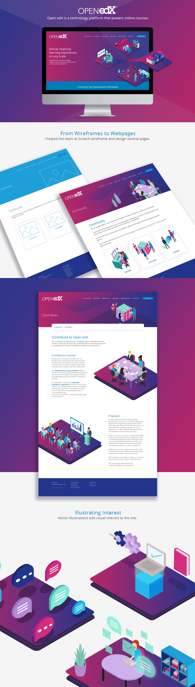

While working at Scratch, I helped redesign Open edX's website.
Open edX is a technology platform that helps organizations run online courses. It is a complex platform with multiple use cases ranging from technical experts that want to program their own online education systems, to educators who simply want to teach others without seeing a single line of code
I was able to help Scratch organize the information in the Community section of the site. I determined that information in the Community category fell into three different user goals: developing products based on the Open edX platform, contributing to the platform itself, and connecting with others in the Open edX community. I gave each goal its own page, and sorted information into these categories, creating subpages as necessary.
I also created wireframes for several of the webpages in Adobe XD, including the Community, Getting Started, and Marketplace Pages.
In addition to wireframing, I contributed to the visual design of the site by helping create vector illustrations.